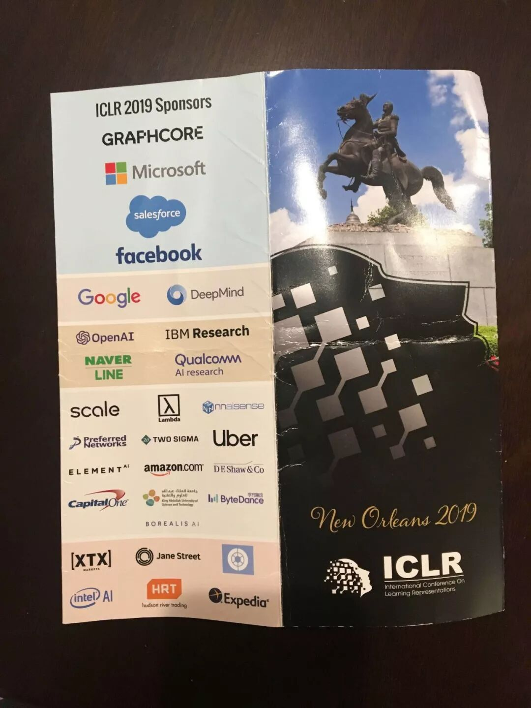
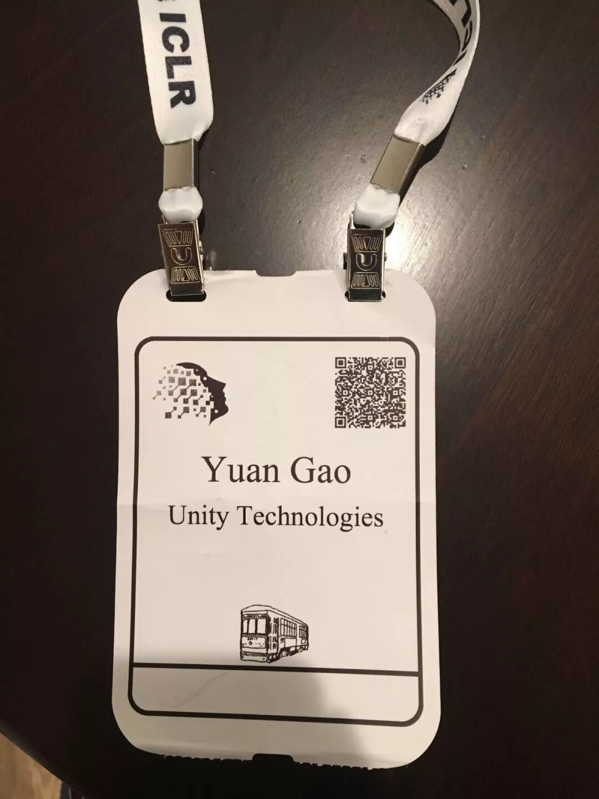
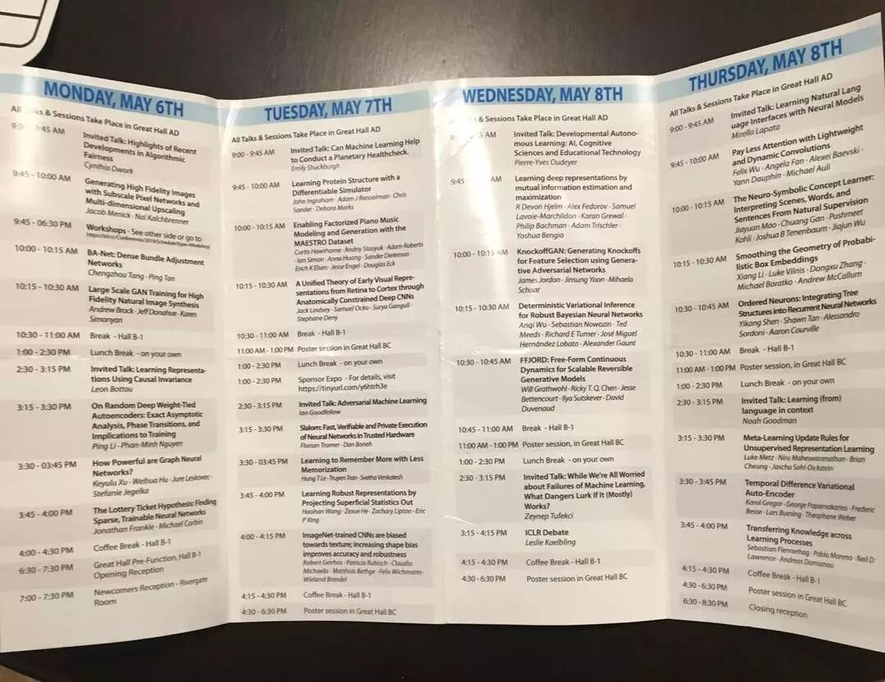
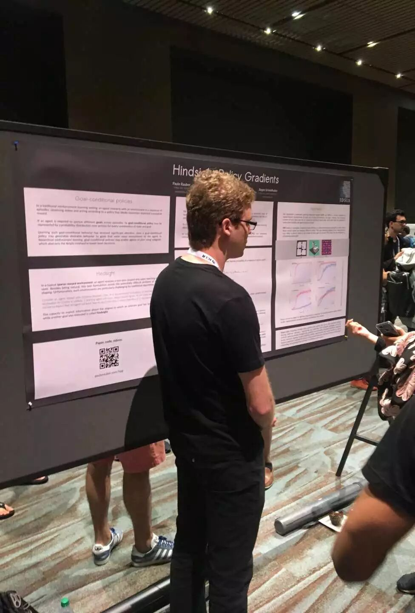
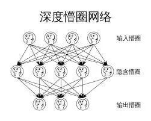
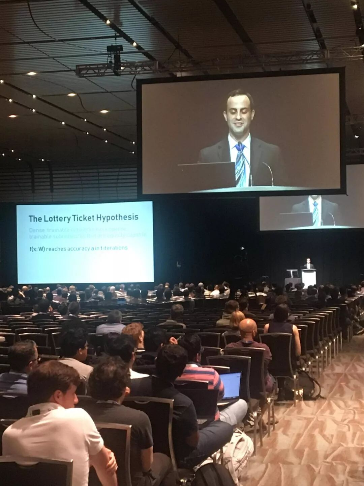

--------点击蓝字关注我--------
ICLR全称(International Conference on Learning Representations)， 是一个在2013年由几个深度学习领域大牛发起的学术会议，在圈子里也算蛮有影响力的。

今年会议在美国的新奥尔良举办。我自己的水平目前也不够格在上面发paper，蹭着公司的福利去参加了一下。这篇就借机记录一下，免得参加完全忘了。

一.会议总体结构及参会意义
ICLR一共为期4天，第一天是workshop日，后三天都是大的演讲夹带着不同主题的Poster Session。

Workshop日会同时进行8个不同主题的workshop。每个workshop里都包含着十几个与该workshop主题相关的演讲，从早上一直开到下午。因为演讲真的比较多，所以这些演讲在网上找不到公开的录像。
后三天大厅的演讲都是录下来的，在https://www.facebook.com/iclr.cc/ 上有直播以及后续整理的录像。
Poster Session的那些Poster（海报）是不太可能有照片的，不过相关的paper都放在(https://iclr.cc/Conferences/2019/Schedule?day=1) 上面了。这个应该是在现场参加会议最有价值的一个环节了，毕竟行业里的大牛好多都站在各自的海报前给大家介绍自己的研究成果，要是平时paper读不懂或者哪里有疑问，直接找人家当面问清楚实在是再方便不过了。

二. Workshop笔记
Workshop我主要听的是Debugging Machine Learning Models这个主题的内容。
Talk 1：讲了一种训练神经网络的方法，这种方法可以让训练出来的神经网络不那么怕所谓的Adversarial Attack。本质一点来说，Adversarial Attack只不过是往图片上加上了我们人类不觉得重要的feature，从而改变了图片在神经网络眼中的类别。具体可以看他们的blog（http://gradientscience.org/adv/）
Talk 2：讲了一种查看神经网络中每一层互相之间的相似性的方法。具体一点来说，他们针对一个数据集，把数据集中的每一条数据在传导到每一层神经网络处的状态记录下来，并且把一层的状态与另一层的状态放入一个函数中，算出两层之间的相似性。具体可以看这里（https://arxiv.org/abs/1905.00414）
Talk 3：深度强化学习有一个问题，就是学出来的Policy很难保证在所有情况下都能正确工作。他们的解决方法是把Policy背后的神经网络用Supervised Learning的方式转化成Decision Tree，然后对这个Decision Tree来做验证。具体可以看这里（https://arxiv.org/abs/1805.08328）
Talk 4：对机器学习模型加Assertion，然后对于Assertion fail的情况可以用另外一个模型进行进一步的修正。具体可以看这篇（https://ddkang.github.io/papers/2018/omg-nips-ws.pdf）

三. 主厅Talk笔记
我觉得所有的Talk中收获最大的就是Ian Goodfellow对于GAN的综述式演讲。
具体演讲内容在这儿：
Section 1:
https://www.facebook.com/iclr.cc/videos/617400432005210/
Section 2:
https://www.facebook.com/iclr.cc/videos/1210851532421760/
演讲中提到的Big Gan这次也来了，在（https://www.facebook.com/iclr.cc/videos/2261061694154984/ at -19：30）
他的演讲中提到这么几个GAN的方向蛮有意思的。
一个是针对RL Agent的Adversarial Attack， 这个talk还没具体看， 链接贴在这儿(https://www.youtube.com/watch?v=TBdXtRClNvc）
一个是训练一个GAN，来把现实中的场景转化成模拟器中的场景。这样一来今后我们要针对现实中的场景做一些决策的话，直接用这个GAN转化成模拟器中的场景，然后用模拟器中训练出来的Policy做决策就行了。这个对我们的隔壁组应该有巨大的吸引力。
其次有用的是这个有关model compression的演讲。
传统上我们知道，深度学习模型在训练结束后，可以被剪枝掉90%的参数，仍然能够保持它的初始性能。
但是如果我们从一开始就做这样的剪枝，然后再训练，则训练出来的模型无法达到之前的效果。
演讲者提出了这样一种理论：之所以我们不能一开始就做剪枝，是因为在训练之前系数初始化的时候，其实我们并不能知道哪些参数是有用的，哪些是没用的，要是一开始就做剪枝，很有可能把有用的剪掉了。
这个Talk具体的内容在这儿：
(https://iclr.cc/Conferences/2019/Schedule?showEvent=1156)。
演讲中称那些最终会有用的参数为“中了彩票的参数”，因此这个演讲也叫The Lottery Ticket Hypothesis。

最后一个不明觉厉的Talk是有关在不定义Reward的情况下自主学习的研究方向。
虽说听起来特别厉害，但是研究出来的东西特别傻，特别没用，而且这个方向搞了好几十年了似乎。具体综述paper在这儿（https://arxiv.org/abs/1712.01626）
三. 其它小收获
认识了一个Waymo的工程师聊了一下，跟他聊起我们公司有个小组在做自动驾驶的虚拟环境的时候，他说似乎这个领域有一个repo已经很有影响力了，叫Carla (https://github.com/carla-simulator/carla)
Microsoft 的 Minecraft的RL 环境似乎高了个Multi Agent的竞赛，具体paper在（https://arxiv.org/pdf/1901.08129.pdf）。总体来说这次ICLR没看到什么像样的multi agent的研究，可能这个领域出一些厉害的结果还是过于难了。
顺便聊一下我的化学老本行。似乎RL在化学的有机反应方面也有一些paper。比如这篇
Learning Multimodal Graph-to-Graph Translation for Molecule Optimization:
https://openreview.net/forum?id=B1xJAsA5F7
文章讲的就是在用Machine Translation里面的方法来解决一个分子可以被如何转化的这样的问题的。
还有这次ICLR铺天盖地的Attention/Transformer model。
我个人对NLP这一块不太熟，回来查了一下资料，似乎Transformer大有取代RNN的趋势，今后在有时间序列的数据集上将会占有统治地位。具体可以看知乎上的这里：
(https://zhuanlan.zhihu.com/p/54743941)